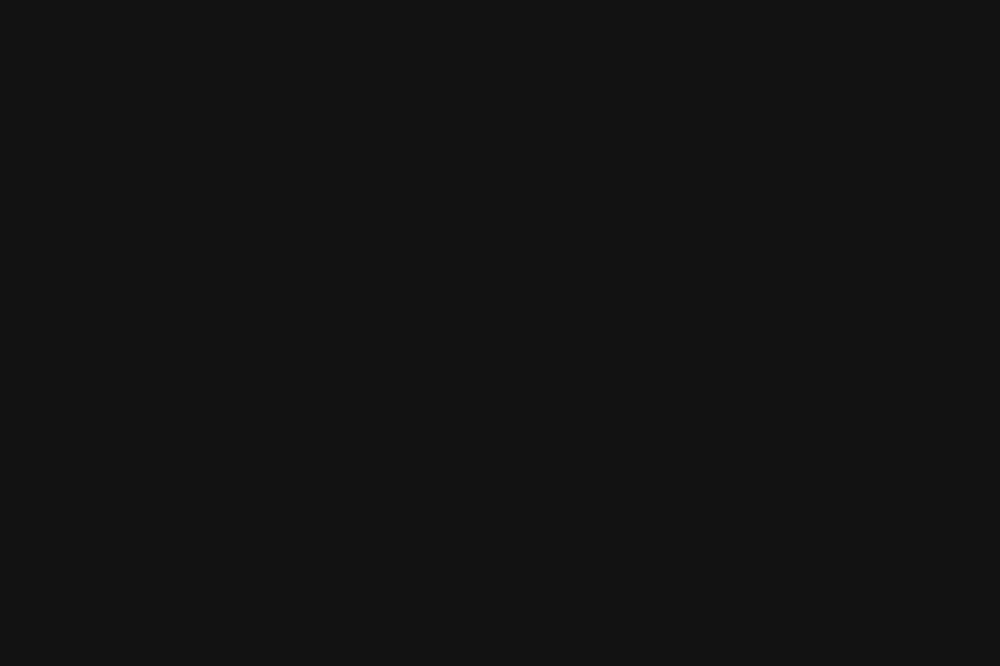
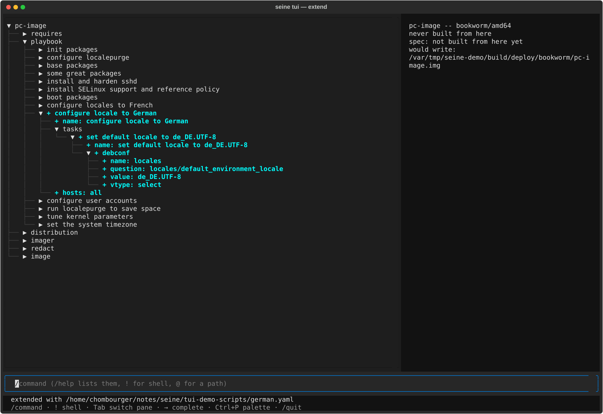
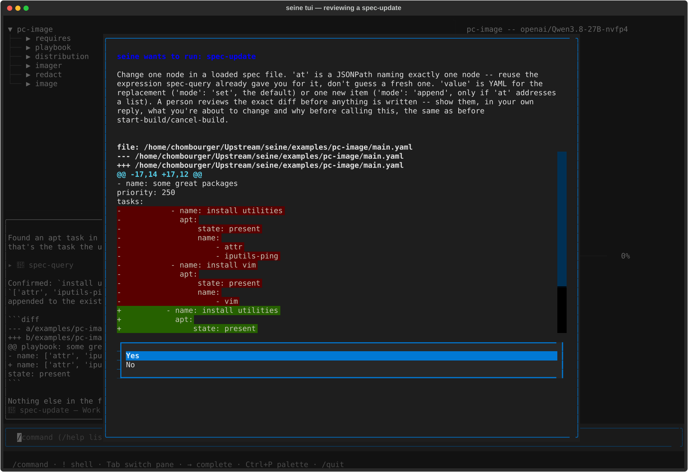
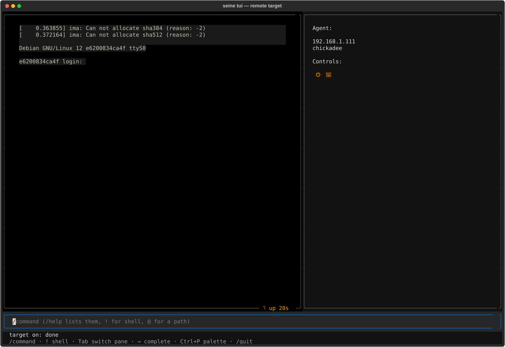
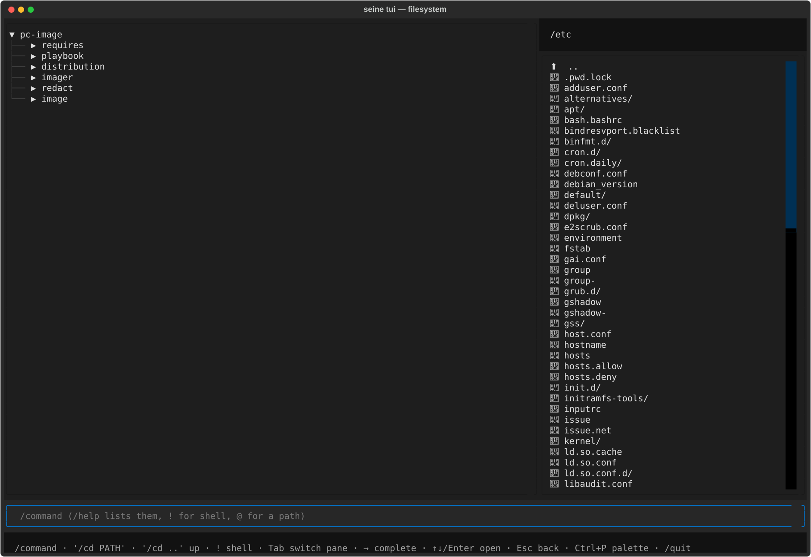
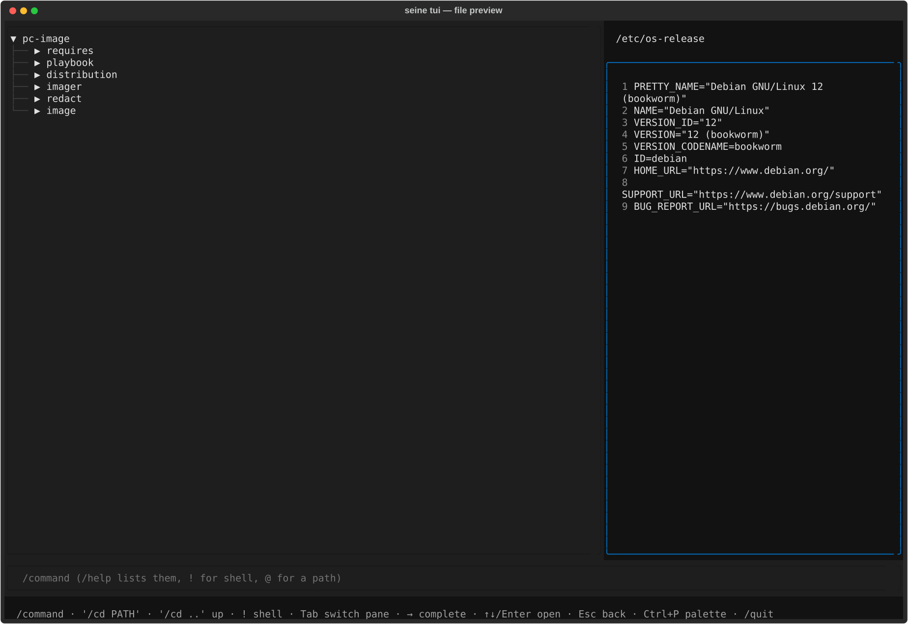
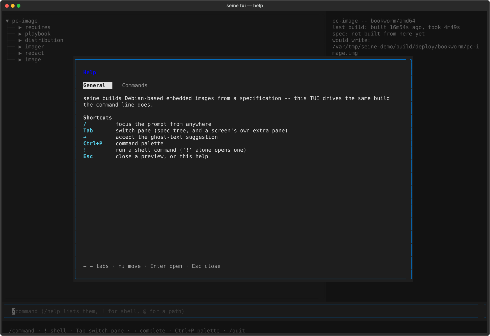

TUI#
seine tui is an interactive alternative to typing seine build/seine plan/
etc. one at a time – the same engine, driven from a /command prompt instead
of the shell, with a screen for each thing seine can already do:
seine tui [SPEC...] [-- SPEC...]...
Needs the tui extra (pip install seine[tui], or the seine-tui package) –
everything else about seine works without it. Given no SPEC, it opens on
the Doctor screen: nothing to build without one yet, so what the machine
itself can build at all is the more useful first thing to see.

The prompt#
Every screen keeps the same prompt at the bottom. A line starting with / is
a command (/build, /plan, …); /help lists them, with a full page per
command (see Help below). A few other things work from any screen:
/focuses the prompt from wherever focus currently is.!commandruns a real shell command, handing it the real terminal and printing its exit status once it returns; a bare!opens an interactive shell the same way.→accepts a ghost-text suggestion – a command name as it is typed, or a path once@starts one (tab-completed against the real filesystem).Ctrl+Popens a command palette listing every command; picking one fills the prompt rather than running it.↑/↓recall previous lines, the same as a shell’s own history.
Screens#
Reached with the matching /command (/help gives the full list, with
every argument each one takes):
Overview – the active specification, once
/usehas set one.Doctor – whether this machine has what a build needs: podman, crun, passt, guestfs, kvm, a hypervisor per architecture, ansible-playbook, gnupg, free space. The opening screen with no spec given.
Plan – what a build would do, diffed against the last real build of these files, without doing any of it.
Build – see below.
Vendor – see below.
Filesystem – see below.
Artifacts, Packages, Analyze, Cache, Diff – the same information
seine analyze/--sbom/seine cache/etc. give on the real command line, read for whatever/uselast set.Issues – known CVEs against the active build’s own SBOM (
seine issueson the command line, Vulnerability scanning): one row per source package – CVE counts by urgency, defect counts (from UDD’s bug search) by severity – beside summary stats. Clicking a count swaps the matrix for that cell’s own entries;Escgoes back to the matrix./issues --rescanrefetches both caches in the background under a progress popup that closes itself;Escdismisses the popup early without cancelling the scan.Remote Target – power, console, storage and USB control for a real device over mtda (github.com/siemens/mtda).
Test – runs the active specification’s own
test:section (Robot Framework) against a real target reached the same way.
Composing with /side-load#
A specification is layered rather than monolithic – requires pulls in
what a release or board already sets, and /side-load FRAGMENT.yaml adds
one more file on top of the active one, live, without starting over.
Nothing reaches for a side-loaded fragment the way requires reaches
for its own, so it amends the active spec field by field rather than
losing to it – a packages/test/etc. entry the fragment names again
takes over the fields it sets (see docs/merging.md).
/side-unload FRAGMENT.yaml reverses it, dropping the file back out and
reparsing without it – neither touches requires: or anything on disk.
What makes this worth showing rather than just telling: the spec tree
diffs the reload against what was there a moment ago and marks exactly
what changed, auto-expanded down to the leaf that moved – not “here is
the new merged file, go find the difference yourself”:

Talking to a model#
With llm_model/llm_api_base set (/settings, or SEINE_LLM_MODEL/
SEINE_LLM_API_BASE as environment overrides), any prompt that doesn’t
start with / goes to a real model instead of commands.dispatch()’s own
CommandError. It reads the same things every screen already renders –
and, with explicit approval each time, can act: changing a node, writing
a new file, loading a fragment onto the active spec:

See ai.md for the full tool list and the trust model behind what it’s allowed to read.
Building#
/build opens a live cockpit: a scrolling log tail beside a per-step
task list, the spec tree auto-expanding and highlighting whatever it is
touching right now – a specific package while one rebuilds from source,
or (once Ansible’s own stdout says so) the exact play and task while the
target’s own playbook runs:
Vendoring#
/vendor runs a specification’s own vendor: section the same way
seine vendor does on the command line: every source package it names,
and its full build-dependency closure, resolved and fetched into a
signed apt repository of its own – one per suite. The screen is the
same live cockpit /build opens, sized for what a vendor run is
instead: a stats panel (suites, task counts, retries, and how much has
been downloaded this session versus the repository’s own total size)
beside a live task list. Works on a specification with no image:
section at all – vendoring pins a package set, it does not build one.
/build and /vendor never run at once; starting one while the other
is running is refused, and /cancel stops whichever is.
Driving a real target#
/target opens a live console + status pane for a device reached through
mtda – the same connection /test (below) uses under the hood. No spec
tree here, unlike every other screen: this one has nothing to do with a
specification. /target connect [AGENT] reaches one (a bare /target
just switches to the screen); /target write IMAGE flashes a built image
onto its shared storage; on/off/toggle, usb PORT on|off|toggle,
snapshot/rollback drive the rest. Two ways to type at the target: the
same prompt every other screen has (a non-‘/’ line goes straight to the
console instead of AI chat), or Tab onto the console pane itself for
raw keystrokes – arrows, Ctrl combos, Esc – the only way to catch
something like a PC’s own “press Esc for setup” window in time:

Nothing here works without mtda installed (seine doctor reports it);
see docs/testing.md for how /test drives the same
connection automatically.
Testing on a real target#
/test [--tags=TAG,...] runs the active specification’s own test:
section (see docs/testing.md) – Robot Framework driven
through the same seine/mtda keywords /target exposes by hand:
power-cycling, logging in, running a console command, polling for a
prompt. The cockpit mirrors /build’s own: a per-test task list beside a
growing output tail, the spec tree auto-expanding to highlight exactly
which test is running right now:
A failed test’s own message surfaces right under its row, not only in
the final summary – the same reason a failure needs to be visible
without scrolling back. /cancel doesn’t reach a running test yet.
Browsing a built image#
/filesystem opens a read-only browser of the last built image for the
active specification (not the specification itself – it needs an image
that has actually been built). /cd PATH changes directory from the
prompt, same as a shell; the listing is also a real focusable list once
Tab reaches it – ↑/↓ move, Enter opens whatever is highlighted:

A directory descends into it. A file that looks like text is shown in
place, line numbers dimmed in the gutter, Esc returning to the listing
it came from. A binary or oversized file, or any other read error, says so
on the status line without disturbing the listing already on screen:

Help#
/help opens as a modal overlay – a dimmed backdrop over whatever screen
was open, not a screen navigated to, so Esc leaves it exactly where it
was underneath. ←/→ switch between two tabs:

General – what seine is, and the shortcuts above.
Commands – a focusable list of every command;
Enteron one opens its own page, laid out the way a realmanpage is (NAME,SYNOPSIS,DESCRIPTION, and anOPTIONSsection for a command with real flags, e.g./build’s own--jobs=N).Enteragain fills the prompt with that command, ready to type on;Escgoes back to the list rather than closing Help outright.
External control#
seine tui --interaction-socket PATH [SPEC...] opens a UNIX domain socket
alongside the normal terminal UI – for driving and observing the TUI from
another process (a test driver, a scripted demo) instead of screen-scraping
a pty. Newline-delimited JSON, one object per line, in both directions.
Sent to the socket:
{"type": "input", "text": "..."}– typestextinto the real prompt, character by character, then submits it (same as a person typing and hitting Enter).{"type": "ai_input", "prompt": "..."}– forwardspromptstraight to the AI chat, without going through the prompt widget at all.
Received from the socket, as things happen – a driver watches for these instead of polling rendered text:
{"type": "ai_message", "content": "..."}– a finished assistant reply.{"type": "ai_turn_finished"}– the AI chat’s own turn is fully done (every message and gated tool call in it), the real end of “Working…”.{"type": "confirm_shown", "tool", "description", "arguments", "preview"}– a gated tool’s approval dialog opened (previewis the diff text forspec-update/spec-create,nullotherwise).{"type": "confirm_resolved", "tool", "approved"}– that dialog closed.{"type": "spec_written", "path"}–spec-update/spec-createactually wrotepathto disk.{"type": "build_finished", "error", "message"}/{"type": "vendor_finished", "error", "message"}/{"type": "test_finished", "error", "message"}–/build//vendor//testfinished.{"type": "screen_changed", "screen"}–/commandswitched screens.{"type": "target_connected", "agent"}/{"type": "target_storage_on_host"}/{"type": "target_storage_write_completed", "path"}–/targetactions completing.
Other screenshots#
 |
 |
 |